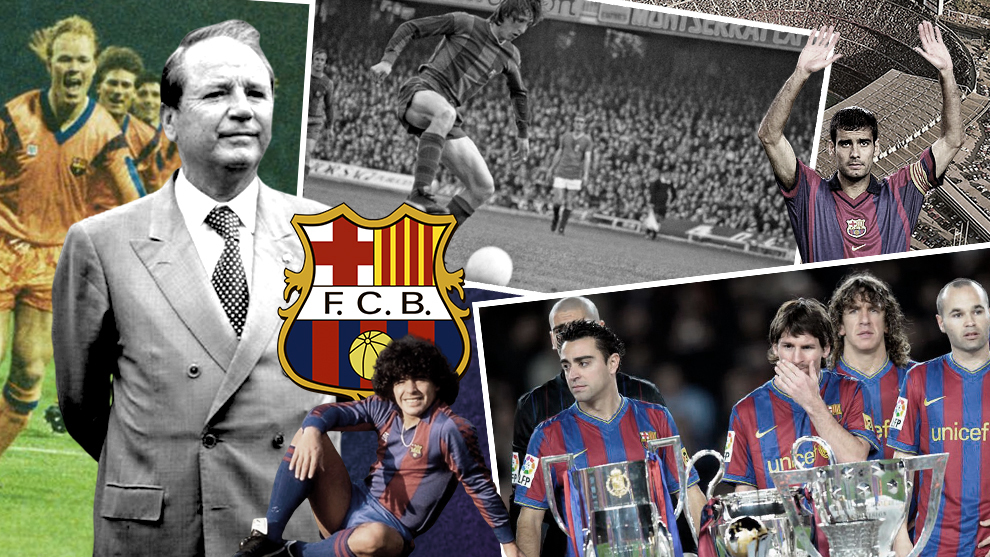

FC Barcelona, usually referred to as Barca, is a Spanish professional football team with their home stadium in Barcelona, Catalonia. The club was established in 1899 by a group of football players from Switzerland, England, and Catalonia under the direction of Joan Gamper, and has since grown to be among the most prosperous and renowned in the sport.

The Camp Nou, one of the biggest stadiums in the world with a seating capacity of approximately 100,000, is the home field of FC Barcelona. Blue and claret, the colours of the Catalan flag, serve as the team's colours.

Some of the greatest football players in history have played for FC Barcelona over the years, including rival Real Madrid player Cristiano Ronaldo and Lionel Messi, who is often regarded as the best player to ever play the game. The team has won many regional, national, and international championships, including four FIFA Club World Cup crowns, five UEFA Champions League championships, and 26 La Liga championships.
Founded on November 29, 1899, the club. The club's early years were distinguished by its increase in popularity and accomplishments in local competitions like the Catalan Championship. A formidable force in Spanish football, Barca won its first national trophy, the Copa del Rey, in 1910. Barca has developed a recognisable playing style that prioritises possession, rapid passing, and offensive football over time. Some of the greatest football players in history, including Johan Cruyff, Lionel Messi, and Ronaldinho, have played for the club. Throughout its history, Barca has been a symbol of Catalan identity and culture, with its motto, "Més que un club" (More than a club), reflecting the club's incredible significance in Catalonia.